Bem-vindo à Lógica Digital!
Clique em um dos tópicos acima para começar a sua jornada no mundo da lógica digital.
1 - O que é lógica?
Lógica é o estudo do raciocínio e das regras que determinam se algo é verdadeiro ou falso.
Na lógica digital, usamos valores binários (0 e 1) para representar essas verdades.
Conheça o Robô Preguiçoso
Ele só vai pegar seu brinquedo (verdadeiro/1) SE você pedir COM CARINHO (1) OU oferecer um biscoito (1).
Se você não fizer nenhum dos dois (0 OU 0), ele fica parado (0).

ü§ñ Está esperando...
Variáveis Lógicas
As variáveis lógicas assumem apenas dois valores: verdadeiro (1) ou falso (0). Elas são a base da Lógica Digital e são utilizadas em expressões para determinar o comportamento de circuitos e sistemas.
Porta Digital
Marque as condições abaixo para tentar abrir a porta:

Portas Lógicas
Aprenda como funciona a lógica com alguns jogos!
4 - Como isso é aplicado no dia a dia?
-
Interruptores(OR)
Os interruptores da sua casa, por exemplo, não são nada mais do que operações lógicas de 'OR'. Você pode perceber isso quando clica nesse interruptor aqui: ele só ficará ligado em dois momentos, e é você quem determina isso.
Essa lógica é comum em casas que possuem interruptor(pelo amor de Deus) para o mesmo ponto de luz.
-
Controle de Videogame (OR)
Em jogos, essa lógica também se aplica. No jogo abaixo, o personagem pode pular ou ir para a frente, dependendo de qual ação for pressionada. Isso também responde à operação lógica OR.
O personagem reage se o botão A ou B forem pressionados.

-
Lampada (AND)
E por último, temos outra lâmpada, mas ela é um pouco diferente da primeira. Ela só pode ser ligada se ambas as opções estiverem ativas. Isso é aplicado em lógicas como a tranca de portas, onde, para abri-la, você precisaria de uma senha e uma digital válida, por exemplo.
